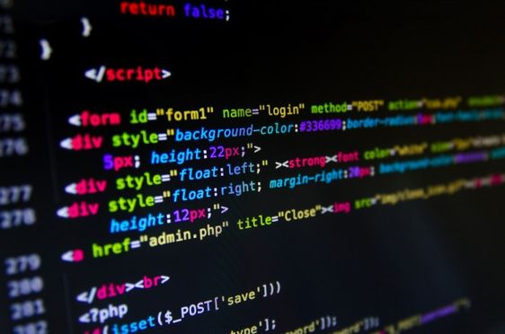
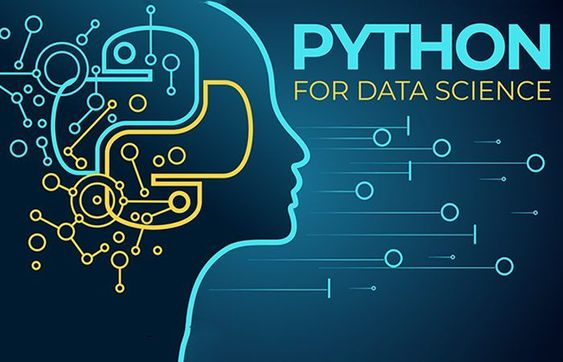

Introduction à la Programmation
L'introduction à la programmation est une étape cruciale pour quiconque souhaite entrer dans le monde du développement logiciel. C’est un domaine vaste, mais voici les concepts fondamentaux pour bien débuter :

1. Qu'est-ce que la Programmation ?
La programmation consiste à écrire des instructions (ou du code) que les ordinateurs peuvent exécuter pour réaliser des tâches spécifiques. Ces instructions sont écrites dans des langages de programmation.
2. Choix d'un Langage de Programmation
Pour débuter, il est souvent recommandé de choisir un langage de programmation simple et populaire, comme : Python : Connue pour sa syntaxe claire et sa polyvalence, idéale pour les débutants. JavaScript : Essentiel pour le développement web, facile à apprendre pour manipuler le DOM et interagir avec les utilisateurs. Scratch : Un langage visuel qui permet de comprendre les concepts de base de la programmation sans écrire de code.3. Concepts de Base de la Programmation
Variables : Stockent des valeurs qui peuvent être utilisées et modifiées dans un programme. Exemple en Python : x = 5 Types de Données : Différentes sortes d’informations que l’on peut manipuler, comme les nombres, les chaînes de caractères, les listes, etc. Exemple : num = 10 (entier), name = "Alice" (chaîne de caractères) Opérateurs : Utilisés pour effectuer des calculs ou des comparaisons. Exemple : + pour l'addition, == pour comparer l'égalité. Structures de Contrôle : Déterminent le flux d'exécution du programme, comme les conditions et les boucles. Conditionnelle : if...else python Copier le code if x > 10: print("x est grand") else: print("x est petit") Boucles : Répètent des blocs de code. python Copier le code for i in range(5): print(i) Fonctions : Blocs de code réutilisables qui effectuent une tâche spécifique. python Copier le code def greet(name): return "Bonjour " + name print(greet("Alice"))
4. Environnements de Développement
IDE (Integrated Development Environment) : Outils pour écrire, tester, et déboguer du code. Exemples : PyCharm, Visual Studio Code. Interpréteur : Exécute le code ligne par ligne, comme dans Python. 5. Débogage et Tests Débogage : Processus de recherche et de correction des erreurs dans le code. Tests : Assurer que le code fonctionne comme prévu. Les tests peuvent être manuels ou automatisés